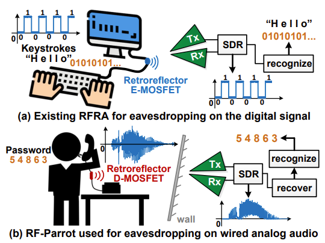
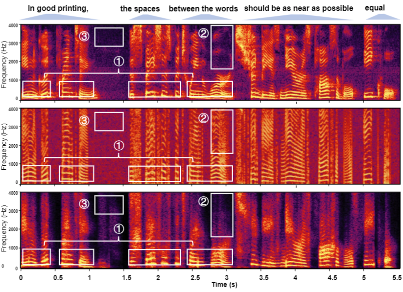

|
Genglin Wang I'm a Ph.D. student at Embedded AI and IoT Lab of Department of Information Engineering, CUHK. Before that, I obtained B.Eng in the School of Information Science and Engineering, Shandong University in 2024. |

|
Research |
|

|
RF-Parrot: Wireless Eavesdropping on Wired Audio
Yanni Yang, Genglin Wang, Zhenlin An, Guoming Zhang, Xiuzhen Cheng, Pengfei Hu. 2024 IEEE International Conference on Computer Communications (INFOCOM'24), [paper] [slides] [video] We present RF-Parrot, a novel attack that enables a wireless attacker to eavesdrop on wired audio signals by exploiting a simple yet effective retroreflector. |
|

|
Wireless Eavesdropping on Wired Audio with Radio-frequency Retroreflector Attack
Genglin Wang, Zheng Shi, Yanni Yang, Zhenlin An, Guoming Zhang, Pengfei Hu, Xiuzhen Cheng, Jiannong Cao. IEEE Transactions on Mobile Computing (TMC), [demo] We present RF-Parrot2, a novel attack that enables a wireless attacker to eavesdrop on wired audio signals by exploiting a simple yet effective retroreflector. |
Awards
|
|
Template from Jon Barron's source code. |